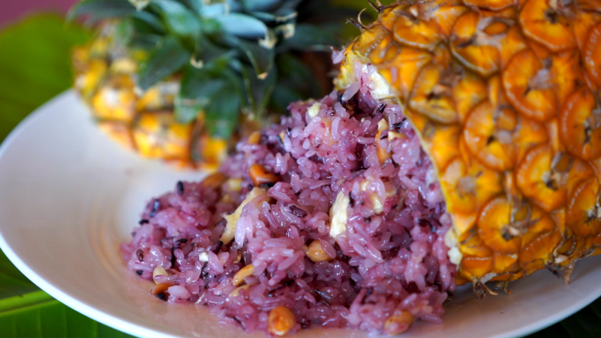

La province du Yunnan, dont le nom signifie littéralement « au sud des nuages », est située dans le sud-ouest de la Chine. Cette région montagneuse et isolée partage des frontières avec les provinces chinoises du Guizhou, du Sichuan, les régions autonomes du Guangxi et du Tibet, ainsi qu’avec plusieurs pays d’Asie du Sud-Est, notamment le Myanmar (Birmanie), le Vietnam et le Laos.
Le climat du Yunnan varie selon les zones : climat de haute montagne dans les pics enneigés de l'Himalaya au nord-ouest, subtropical humide dans les vallées, et tropical humide au sud. La biodiversité de cette province est l'une des plus riches de Chine. En effet, elle possède plus de 50% des espèces de plantes de tout le pays. L'agriculture repose sur le riz, le maïs, l'orge, le blé, le colza, les patates douces, le soja, le café, le thé, la canne à sucre, le café. Le Yunnan est surnommé « Royaume des Champignons ». Plus de 250 espèces de champignons comestibles sauvages y poussent comme les bolets, les Termitomyces, la dame voilée et le matsutake.
Le Yunnan a une histoire fascinante marquée par une grande diversité ethnique. La province est communément appelée « Dian », en référence au Royaume de Dian, qui existait dans l'Antiquité sur le territoire de l'actuel Yunnan.
Ce royaume a précédé le Royaume de Dali (937-1253), qui entretenait des relations commerciales et diplomatiques avec la dynastie Song, ainsi qu'avec des royaumes voisins, tels que le Royaume de Bagan (Myanmar). Grâce à sa position géographique stratégique, le Yunnan est devenu un carrefour pour les routes commerciales reliant la Chine, l'Inde et le sud-est asiatique, créant ainsi un véritable melting-pot d'influences qui se reflètent encore aujourd'hui dans sa culture et sa gastronomie.
Ce n'est qu'après l'invasion de Dali par les Mongols en 1253 que la province du Yunnan fut formée sous la dynastie Yuan et devint officiellement une partie de la Chine. Pour stabiliser la province, les Yuan instaurèrent un système de chefferie autochtone, connu sous le nom de tusi. Ce système attribuait des grades et des postes à des chefs locaux, permettant aux peuples du Yunnan de conserver une grande partie de leur autonomie. Cette période de domination mongole a également introduit une influence musulmane importante dans la région.
Le Yunnan est reconnu pour sa grande diversité ethnique. C'est la province chinoise qui compte le plus grand nombre de groupes ethniques distincts (25) parmi les provinces et régions autonomes du pays. Environ 40% de la population de la province appartient à des minorités ethniques, telles que les Yi, les Bai, les Hani, les Dai et les Tibétains.
La cuisine du Yunnan est extrêmement variée, ce qui rend les généralisations difficiles. De nombreux plats y sont assez épicés, et les champignons y jouent un rôle important.
Les saveurs prédominantes sont acidulées, épicées et umami.
La richesse naturelle du Yunnan en fait une région exceptionnelle pour les ingrédients frais et sauvages. Son climat varié, allant des montagnes enneigées aux forêts tropicales, favorise une grande diversité de produits que l'on ne trouve souvent nulle part ailleurs en Chine.
En plus des célèbres champignons sauvages, qui font la renommée de la cuisine locale, le Yunnan se distingue du reste du pays par l’utilisation de fougères et de fleurs comestibles telles que les roses, les chrysanthèmes, les magnolias et l’osmanthus.
La cuisine du Yunnan est une véritable mosaïque de traditions culinaires, enrichie par les influences de ses nombreuses ethnies et de ses voisins d’Asie du Sud-Est.
Par exemple, la cuisine Dai évoque les saveurs thaïlandaises, avec l'utilisation du riz gluant, du lait de coco, des épices, et des cuissons dans des feuilles de bananier.
De son côté, la cuisine Bai se distingue par ses plats froids aux notes acidulées, relevés d’épices, ainsi que par l’usage traditionnel du fromage de lait de vache (rushan) ou de chèvre (rubing), une rareté en Chine.
L’utilisation de yaourts et de viandes séchées dans l’alimentation locale n’est pas sans rappeler l’influence mongole et tibétaine.
Enfin, l’empreinte de l’Asie du Sud-Est est omniprésente, particulièrement dans le sud du Yunnan, avec l’utilisation de piments, d’herbes fraîches et d’agrumes comme le citron vert et le combava, qui apportent une touche de fraîcheur et d’exotisme.
Les guoqiao mixian sont un plat emblématique du Yunnan, constitué d'un bouillon bouillant préparé à base de poulet, d'os de porc et d'épices. Les nouilles de riz et les ingrédients, souvent crus (jambon, poulet, tofu, cébettes), sont servis séparément. Ces ingrédients sont alors ajoutés au bouillon afin de les cuire rapidement.
Selon la légende, ce plat aurait été créé sous la dynastie Qing par une femme qui préparait de la nourriture pour son mari, un étudiant devant traverser un pont pour réviser sur une île. Elle constata que la soupe devenait froide et les nouilles molles avant son arrivée. Elle décida alors de verser une couche d'huile sur un pot de bouillon bouillant pour le garder chaud, en séparant les nouilles et les autres ingrédients dans un récipient. Lorsqu'elle arrivait, elle mélangeait les deux pour obtenir une soupe bien chaude.
C'est un plat qui rappelle un plat d'un pays voisin: le phở gà vietnamien (pho au poulet)
L'erkuai est un type de gâteau de riz typique de la province du Yunnan. Il est souvent servi sauté avec des légumes et accompagné de sauce mala, une sauce épicée à base de piments rouges séchés, de poivre du Sichuan et de sel.
Il est également vendu en tant que street food populaire sous le nom de shao erkuai, une version grillée et roulée autour d'un youtiao (bâtonnet de pâte frite), avec des condiments sucrés ou salés, créant ainsi un snack roulé ressemblant à un burrito mexicain. La version sucrée contient une sauce douce et des arachides, tandis que la version salée est garnie de tofu fermenté et de germes de soja, avec divers autres toppings.
Le riz à l'ananas est une méthode de préparation du riz utilisée par les Dai au Yunnan. Du riz gluant (généralement un mélange de riz violet et blanc) est cuit à la vapeur. Un ananas mûr est ensuite évidé en coupant le dessus et en retirant la chair, ou en le coupant en deux dans le sens de la longueur, puis la chair est découpée en petits cubes. Le riz gluant cuit est mélangé avec la chair d'ananas, des raisins secs, du sucre, du sel, du lait de coco et des amandes tranchées. Le mélange est replacé dans l'ananas évidé et cuit à la vapeur pendant encore 20 minutes. Le riz à l'ananas est un plat sucré, souvent servi en accompagnement d'autres mets.
Des techniques similaires de préparation existent dans d'autres régions des pays voisins, notamment au Myanmar, au Laos, en Thaïlande et au Vietnam.
